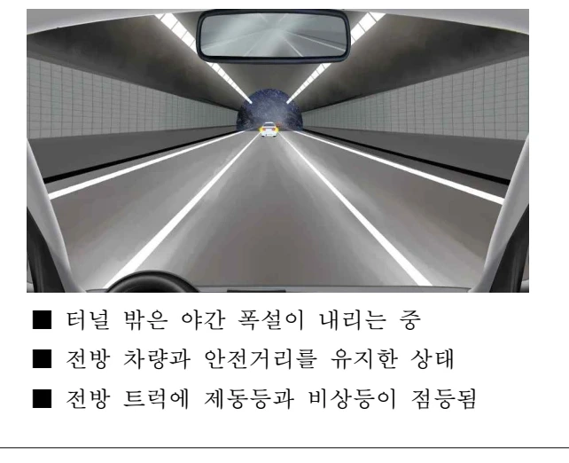

838. Which of the following are the TWO safest ways to proceed in the given situation?

- ①Since there is no snow inside the tunnel, there is no need to slow down.
- ②The lights on the truck ahead indicate a possible emergency outside the tunnel, so you should be prepared.
- ③To avoid a collision with the vehicle ahead, quickly switch to the third lane.
- ④Beware of a temporary loss of vision due to light adaption when exiting the tunnel.
- ⑤Be prepared in advance for sudden changes in the road conditions between the inside and outside of the tunnel.
Show answer
Answer
② The lights on the truck ahead indicate a possible emergency outside the tunnel, so you should be prepared.
⑤ Be prepared in advance for sudden changes in the road conditions between the inside and outside of the tunnel.
Reference
① Even if there is no snow piled up inside the tunnel, you must drive at a lower maximum speed considering the possibility of icy roads. ③ Changing lanes is not possible in the solid-line section of the tunnel, and slipping accidents can occur frequently at the entrance and exit of highway tunnels in winter, so it is important to look ahead. ④ In the case of night driving, the inside of the tunnel is bright due to the interior lights, and the outside of the tunnel is dark, so if you go outside the tunnel, you may experience temporary vision loss due to dark adaptation.
Reference text is a machine translation for study.